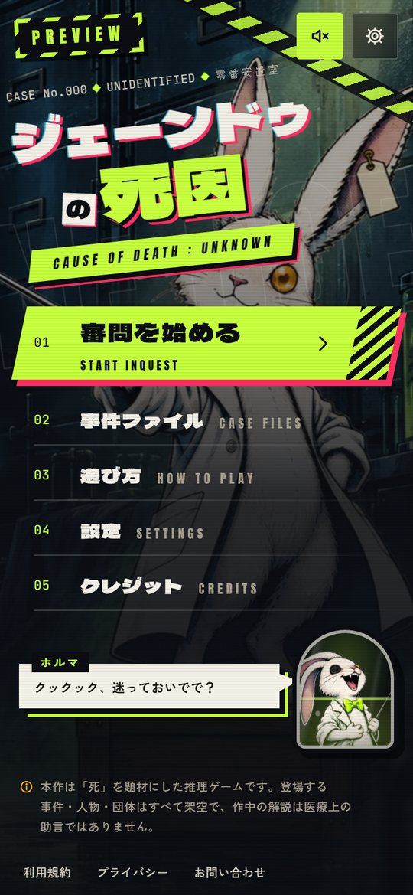

<title>ジェーンドゥの死因 ゲーム企画</title>
<meta name="robots" content="noindex, nofollow">
<link rel="preconnect" href="https://fonts.googleapis.com">
<link rel="preconnect" href="https://fonts.gstatic.com" crossorigin>
<link rel="stylesheet" href="https://fonts.googleapis.com/css2?family=Dela+Gothic+One&family=Zen+Kaku+Gothic+New:wght@400;500;700&family=JetBrains+Mono:wght@400;600&display=swap">
<style>
  /* One deliberate look (the game's own): an ink-dark case file header on bone paper. */
  :root {
    color-scheme: light;
    --ink: #0B0D12;
    --ink-2: #1A1E27;
    --paper: #F2EFE6;
    --paper-2: #E8E3D6;
    --text: #1B1E25;
    --soft: #5C6270;
    --rule: #D3CDBE;
    --formalin: #C6FF3D;
    --formalin-ink: #4E6B00;
    --alarm: #E0244F;
    --cyan: #1E9DB8;
    --display: "Dela Gothic One", "Zen Kaku Gothic New", "Hiragino Sans", "Yu Gothic", sans-serif;
    --body: "Zen Kaku Gothic New", "Hiragino Sans", "Yu Gothic", "Meiryo", sans-serif;
    --mono: "JetBrains Mono", ui-monospace, "SFMono-Regular", Consolas, monospace;
  }
  html { background: var(--paper); }
  body { background: var(--paper); color: var(--text); font-family: var(--body); font-size: 16px; line-height: 1.85; }
  .wrap { max-width: 980px; margin: 0 auto; padding-inline: 20px; }
  a { color: var(--cyan); text-underline-offset: 3px; }
  a:focus-visible, button:focus-visible { outline: 3px solid var(--alarm); outline-offset: 3px; }
  img { display: block; max-width: 100%; height: auto; }

  /* Header */
  .hero { background: var(--ink); color: var(--paper); padding-block: 28px 36px; }
  .hero .wrap { display: grid; gap: 22px; }
  .tag { font-family: var(--mono); font-size: 12px; letter-spacing: .14em; color: var(--formalin); text-transform: uppercase; }
  .hero h1 { font-family: var(--display); font-weight: 400; font-size: clamp(28px, 5vw, 44px); line-height: 1.3; margin: 0; text-wrap: balance; }
  .hero h1 em { font-style: normal; color: var(--formalin); }
  .hero .lead { margin: 0; max-width: 62ch; color: #C9CCD4; }
  .hero figure { margin: 0; border: 1px solid #2C3240; }
  .meta { display: flex; flex-wrap: wrap; gap: 8px 18px; font-family: var(--mono); font-size: 12.5px; color: #9BA1AE; }
  .meta b { color: var(--paper); font-weight: 600; }
  .draft { display: inline-block; font-family: var(--mono); font-size: 11px; letter-spacing: .1em; padding: 2px 8px; border: 1px dashed var(--formalin); color: var(--formalin); }

  /* Sections */
  main { padding-block: 12px 56px; }
  section { padding-block: 40px 8px; border-bottom: 1px solid var(--rule); }
  section:last-of-type { border-bottom: 0; }
  .eyebrow { font-family: var(--mono); font-size: 12px; letter-spacing: .14em; color: var(--soft); text-transform: uppercase; margin: 0 0 6px; }
  h2 { font-family: var(--display); font-weight: 400; font-size: clamp(22px, 3.4vw, 30px); line-height: 1.35; margin: 0 0 18px; text-wrap: balance; }
  h3 { font-size: 18px; margin: 0 0 6px; line-height: 1.5; }
  p { margin: 0 0 14px; max-width: 68ch; }
  .note { font-size: 14px; color: var(--soft); }

  /* Play flow: a real sequence, so it is numbered */
  .flow { list-style: none; padding: 0; margin: 8px 0 0; display: grid; gap: 34px; counter-reset: step; }
  .flow li { display: grid; grid-template-columns: minmax(0, 1.25fr) minmax(0, 1fr); gap: 22px; align-items: start; counter-increment: step; }
  .flow figure { margin: 0; border: 1px solid var(--ink); box-shadow: 6px 6px 0 var(--ink); background: var(--ink); }
  .flow .step::before { content: "STEP " counter(step, decimal-leading-zero); display: block; font-family: var(--mono); font-size: 12px; letter-spacing: .14em; color: var(--alarm); margin-bottom: 4px; }
  .flow p { font-size: 15px; }
  figcaption { font-family: var(--mono); font-size: 11.5px; color: #9BA1AE; background: var(--ink); padding: 6px 10px; }

  .phones { display: grid; grid-template-columns: repeat(4, minmax(0, 1fr)); gap: 14px; margin-top: 30px; }
  .phones figure { margin: 0; border: 1px solid var(--ink); background: var(--ink); }

  /* Specimen-label facts */
  .labels { display: grid; grid-template-columns: repeat(3, minmax(0, 1fr)); gap: 14px; margin: 18px 0 10px; }
  .label { background: #FBF9F3; border: 1px solid var(--rule); border-left: 4px solid var(--ink); padding: 14px 16px; }
  .label .v { font-family: var(--display); font-size: 26px; line-height: 1.2; display: block; font-variant-numeric: tabular-nums; }
  .label .k { font-size: 13.5px; color: var(--soft); display: block; margin-top: 4px; line-height: 1.6; }

  .points { margin: 0; padding-left: 1.2em; max-width: 70ch; }
  .points li { margin-bottom: 8px; }

  /* Cases */
  .cases { display: grid; grid-template-columns: repeat(3, minmax(0, 1fr)); gap: 14px; }
  .case { background: #FBF9F3; border: 1px solid var(--rule); padding: 16px; display: grid; gap: 6px; align-content: start; }
  .case .no { font-family: var(--mono); font-size: 12px; letter-spacing: .12em; color: var(--soft); }
  .case h3 { font-family: var(--display); font-weight: 400; font-size: 20px; margin: 0; }
  .case .en { font-family: var(--mono); font-size: 11px; letter-spacing: .08em; color: var(--alarm); }
  .case p { font-size: 14px; margin: 4px 0 0; }
  .case dl { margin: 6px 0 0; display: grid; grid-template-columns: auto 1fr; gap: 2px 10px; font-size: 13.5px; }
  .case dt { color: var(--soft); }
  .case dd { margin: 0; }

  /* Two-column table */
  .table-wrap { overflow-x: auto; }
  table { border-collapse: collapse; width: 100%; font-size: 14.5px; min-width: 520px; }
  th, td { text-align: left; vertical-align: top; padding: 10px 12px; border-bottom: 1px solid var(--rule); }
  th { font-family: var(--mono); font-size: 12px; letter-spacing: .1em; color: var(--soft); font-weight: 600; background: var(--paper-2); }

  /* Options */
  .options { display: grid; grid-template-columns: repeat(3, minmax(0, 1fr)); gap: 14px; }
  .option { border: 1px solid var(--ink); background: #FBF9F3; padding: 16px; }
  .option h3 { font-size: 16.5px; }
  .option p { font-size: 14px; margin: 0; }

  .ask { background: var(--ink); color: var(--paper); padding: 22px; margin-top: 8px; }
  .ask h3 { color: var(--formalin); }
  .ask ol { margin: 8px 0 0; padding-left: 1.3em; }
  .ask li { margin-bottom: 8px; }
  .ask .note { color: #AEB3BF; }

  .contact { font-size: 15px; }
  .contact .url { font-family: var(--mono); font-size: 14px; word-break: break-all; }


  .verdicts td.mark { font-family: var(--display); font-size: 24px; text-align: center; color: var(--formalin-ink); }
  .verdicts td:first-child { white-space: nowrap; font-weight: 700; }
  .small { font-size: 12.5px; color: var(--soft); font-weight: 400; }
  .qs-wrap { display: grid; gap: 8px; margin: 10px 0 14px; }
  details { background: #FBF9F3; border: 1px solid var(--rule); padding: 10px 16px; }
  details[open] { border-color: var(--ink); }
  summary { cursor: pointer; font-weight: 700; }
  .syn { font-size: 14px; color: var(--soft); margin: 10px 0 6px; }
  .qs { margin: 8px 0 4px; padding-left: 1.4em; font-size: 14.5px; }
  .qs li { margin-bottom: 8px; }
  footer { background: var(--ink); color: #9BA1AE; font-size: 12.5px; padding-block: 18px; }

  @media (max-width: 760px) {
    .flow li { grid-template-columns: 1fr; gap: 12px; }
    .labels, .cases, .options { grid-template-columns: 1fr; }
    .phones { grid-template-columns: repeat(2, minmax(0, 1fr)); }
  }
  @media (prefers-reduced-motion: no-preference) {
    .flow figure { transition: transform .25s ease, box-shadow .25s ease; }
    .flow figure:hover { transform: translate(-2px, -2px); box-shadow: 8px 8px 0 var(--ink); }
  }
</style>

<header class="hero">
  <div class="wrap">
    <div class="meta"><span class="tag">CASE FILE — 企画概要</span><span><b>2026年9月</b></span><span>ご相談用資料</span><span class="draft">DRAFT</span></div>
    <h1>「ジェーンドゥの死因」を、<br><em>自分で質問して解ける</em>ブラウザゲームに。</h1>
    <p class="lead">プレイヤーが自由に質問を打ち込み、AIのゲームマスターが「はい／いいえ」で答える水平思考型の推理ゲームです。死因を当てたあとは、その死の裏にある科学を図解で学んで帰ります。PC・スマートフォンのブラウザで遊べます。</p>
    <figure></figure>
    <div class="meta"><span>制作: <b>一般社団法人フォースプレイス　四ヶ所伸一（ヨンサン）</b></span></div>
  </div>
</header>

<main class="wrap">

  <section aria-labelledby="s-origin">
    <p class="eyebrow">きっかけ</p>
    <h2 id="s-origin">家族で番組を楽しむうちに、「自分たちで遊べたら」と思いました。</h2>
    <p>妻が『Dr.STONE』をきっかけにくられ先生の動画を見るようになり、ドズル社さんとのコラボ回で、ドズル社が大好きな娘が「ジェーンドゥの死因」にすっかりハマりました。家族で一緒に推理するのが楽しく、「これを誰でも自分で遊べる形にできないか」と考えて、ブラウザゲームとして試作しました。</p>
    <p>現在、3つの事件を最後まで遊べる状態になっています。公開の前に、名称の使用と科学解説の監修について、薬理凶室さんにご相談させてください。</p>
  </section>

  <section aria-labelledby="s-flow">
    <p class="eyebrow">遊びの流れ</p>
    <h2 id="s-flow">質問して、論破して、名前を取り戻し、科学を持ち帰る。</h2>
    <ol class="flow">
      <li>
        <figure><figcaption>捜査 — 自由に質問する</figcaption></figure>
        <div class="step"><h3>自由に質問する（捜査）</h3><p>「毒は関係ありますか？」「部屋に窓はありましたか？」など、自由な文章で質問します。案内役のホルマが「はい／いいえ／関係ない」などで答え、重要な手がかりは「所見カード」として手元に残ります。手がかりが増えるほど、名前を失った女性（ジェーン・ドゥ）の姿が少しずつ見えてきます。</p></div>
      </li>
      <li>
        <figure><figcaption>審問 — 間違った記憶を撃ち抜く</figcaption></figure>
        <div class="step"><h3>間違った記憶を撃ち抜く（審問）</h3><p>ジェーン・ドゥは、自分の死について間違った記憶を信じています。発言の中の光る言葉を、集めた所見カードで撃ち抜いて正します。必要な手がかりが無くても、案内役に頼めば先へ進めるので、詰むことはありません。</p></div>
      </li>
      <li>
        <figure><figcaption>死因宣告 — 自分の言葉で答える</figcaption></figure>
        <div class="step"><h3>自分の言葉で死因を答える（死因宣告）</h3><p>「何が起きて、なぜ死んだのか」を自由に書きます。答えは「直接の死因」「きっかけの出来事」「科学的な仕組み」などの要素ごとに判定され、足りない要素だけが分かります（答えそのものは教えません）。</p></div>
      </li>
      <li>
        <figure><figcaption>真相再構成 — 5コマで組み直す</figcaption></figure>
        <div class="step"><h3>事件を5コマで組み直す（真相再構成）</h3><p>事件の流れを漫画のコマで組み直します。すべて埋まると、案内役が事件の全貌を語ります。</p></div>
      </li>
      <li>
        <figure><figcaption>身元回復 — 名前が戻る</figcaption></figure>
        <div class="step"><h3>彼女の名前が戻る（身元回復）</h3><p>死因が明らかになると、ガラス片がつながって肖像と名前が戻り、本人が別れの言葉を告げます。物語としての締めくくりです。</p></div>
      </li>
      <li>
        <figure><figcaption>科学解剖 — 図解で学ぶ</figcaption></figure>
        <div class="step"><h3>その死の科学を学ぶ（科学解剖・確認テスト）</h3><p>原因 → 科学現象 → 体に起きたこと → 結果、の順に図解で解説します。よくある誤解、身近な場面での注意、身を守る方法、参考資料まで載せ、最後に短い確認テストで知識を定着させます。</p></div>
      </li>
    </ol>
    <div class="phones" aria-label="スマートフォンでの表示">
      <figure><figcaption>スマホ — タイトル</figcaption></figure>
      <figure><figcaption>スマホ — 捜査</figcaption></figure>
      <figure><figcaption>スマホ — 審問</figcaption></figure>
      <figure><figcaption>スマホ — 科学解剖</figcaption></figure>
    </div>
  </section>

  <section aria-labelledby="s-ai">
    <p class="eyebrow">AIの使い方</p>
    <h2 id="s-ai">真相は人が作ったデータに固定。AIは「判定」だけ。</h2>
    <p>AIに真相を考えさせたり、自由に文章を書かせたりはしていません。事件の真相・手がかり・正解の条件はすべて事前に人が作ったデータに固定し、AIはプレイヤーの質問が「はい」か「いいえ」かを判定するだけです。返事の台詞も書き溜めたものから選ぶため、AIが答えを漏らしたり、無い事実を作ったりしない仕組みです。</p>
    <div class="labels">
      <div class="label"><span class="v">91.1%</span><span class="k">判定の正答率（人が正解を付けた823問で測定）</span></div>
      <div class="label"><span class="v">約0.045円</span><span class="k">1問あたりのAI費用（判定専用AI「Jev」を使用）</span></div>
      <div class="label"><span class="v">約0.3秒</span><span class="k">質問してから答えが返るまで（中央値）</span></div>
    </div>
    <ul class="points">
      <li><strong>安全への配慮：</strong>自傷や「人を傷つける方法」を尋ねる質問は、AIに渡す前に止め、相談窓口（厚生労働省「まもろうよ こころ」）を案内します。致死量や手順は、解説にも一切載せていません。</li>
      <li><strong>事件の追加：</strong>事件はデータとして独立しているため、プログラムを直さずに新しい事件を追加できます。</li>
    </ul>
  </section>

  <section aria-labelledby="s-cases">
    <p class="eyebrow">収録している事件（すべて架空）</p>
    <h2 id="s-cases">3つの事件と、その裏にある科学</h2>
    <div class="cases">
      <article class="case">
        <span class="no">CASE 01 · 難易度 ★</span>
        <h3>息のない部屋</h3>
        <span class="en">THE ROOM WITHOUT BREATH</span>
        <p>窓のない地下の試料保管室で、若い研究者が眠るように亡くなっていた。</p>
        <dl><dt>科学</dt><dd>液体窒素の気化による酸素欠乏（化学・生理学）</dd><dt>出典</dt><dd>23件</dd></dl>
      </article>
      <article class="case">
        <span class="no">CASE 02 · 難易度 ★★</span>
        <h3>夕暮れの白球</h3>
        <span class="en">THE BALL AT DUSK</span>
        <p>夏の夕方、弟とキャッチボールをしていた少女が突然倒れた。</p>
        <dl><dt>科学</dt><dd>心臓震盪と、AEDが救える命（物理・生理学）</dd><dt>出典</dt><dd>40件</dd></dl>
      </article>
      <article class="case">
        <span class="no">CASE 03 · 難易度 ★★★</span>
        <h3>雪に残されたもの</h3>
        <span class="en">WHAT WAS LEFT IN THE SNOW</span>
        <p>冬山の岩陰で、薄着の女性が見つかった。周りの雪には防寒具が点々と落ちていた。</p>
        <dl><dt>科学</dt><dd>低体温症と「矛盾脱衣」（生理学・法医学）</dd><dt>出典</dt><dd>23件</dd></dl>
      </article>
    </div>
    <p class="note" style="margin-top:14px">1事件あたり、手がかり40件以上・想定質問210〜360問を用意し、AIの判定精度を自動で測れるようにしています。</p>
  </section>

  <section aria-labelledby="s-own">
    <p class="eyebrow">番組とのちがい</p>
    <h2 id="s-own">お借りしたいのは、名称と遊び方の基本だけです。</h2>
    <div class="table-wrap">
      <table>
        <thead><tr><th scope="col">新しく作ったもの</th><th scope="col">番組から使っていないもの</th></tr></thead>
        <tbody>
          <tr><td>事件（問題）と真相・手がかり</td><td>番組の問題・出題文・真相</td></tr>
          <tr><td>案内役「ホルマ」（白ウサギの剥製標本）と世界観</td><td>出演者・キャラクター・イラスト</td></tr>
          <tr><td>イラスト・背景・漫画のコマ</td><td>ロゴ・サムネイル・動画の映像</td></tr>
          <tr><td>BGM・効果音（すべて自作の合成音）</td><td>音声・楽曲</td></tr>
          <tr><td>科学解説・確認テスト（公的機関や論文で裏付け）</td><td>番組内の解説</td></tr>
        </tbody>
      </table>
    </div>
  </section>

  <section aria-labelledby="s-science">
    <p class="eyebrow">科学の裏付け</p>
    <h2 id="s-science">3つとも「現実に起こりうる」ことを資料で確かめました。</h2>
    <p>各事件の解説は、厚生労働省・消防庁・学会・大学・学術論文などの資料で裏付けを取り、出典を画面に載せています。さらに公開前の点検として、事件ごとに「筋書きが現実に起こりうるか」「解説の一文一文が正しいか」「専門家ならどこで反論するか」の3つの観点で調べ直し、見つかった点を直しました（2026年9月25日）。</p>
    <div class="table-wrap">
      <table class="verdicts">
        <thead><tr><th scope="col">事件</th><th scope="col">判定</th><th scope="col">現実の裏づけ（主なもの）</th></tr></thead>
        <tbody>
          <tr><td>息のない部屋<br><span class="small">液体窒素による酸素欠乏</span></td><td class="mark">○</td><td>研究施設の小部屋で液体窒素の補充中に研究員が亡くなった国内の労働災害事例（厚生労働省）、北海道大学の低温実験室の事故（1992年）、韓国の大学院生の事故（2008年の論文）など、ほぼ同じ形の事故が記録されています。安全上の決まりが何重にも破られていることが条件です。</td></tr>
          <tr><td>夕暮れの白球<br><span class="small">心臓震盪</span></td><td class="mark">○</td><td>国内でも、遊びの最中に逸れた軟式ボールで子どもが亡くなった例があります（日本臨床救急医学会誌の報告）。被害者の9割以上は男性で、18歳の女性は少数派ですが、十代の女性の例も報告されています。</td></tr>
          <tr><td>雪に残されたもの<br><span class="small">低体温症（矛盾脱衣）</span></td><td class="mark">○</td><td>凍死の3割前後に服を自分で脱ぐ「矛盾脱衣」が見られるという法医学の研究があり、若く健康な登山者の例や、服を脱いでいたため事件と疑われた例も報告されています。</td></tr>
        </tbody>
      </table>
    </div>
    <p class="note">○＝起こりうるが、条件の重なりが必要。3つとも、資料だけでは決めきれない点が残っているため、専門家の方に確かめていただきたいと考えています。致死量や危険になるまでの時間など、まねできてしまう数値や手順は、ゲームにも本資料にも載せていません。</p>
    <p><strong>番組の出題との重なり：</strong>公開されている公式の28問の正解を確かめたところ、3つの事件と同じ死因の回はありませんでした。ただ、CASE 01 は「冷却に使うガスが閉じた空間にたまる」という型が、#16「呪われた施設の大量死体」（ドライアイスの二酸化炭素）と近いです。仕組みは異なります（毒性のない窒素で酸素だけが減る）が、近すぎるとお感じになる場合は舞台や小道具を変えます。</p>
    <h3 style="margin-top:22px">専門家に確認していただきたい点（全27問）</h3>
    <p class="note">「はい／いいえ」か短いお答えで足りる形にしています。謎解きの設計や演出は範囲に含みません。</p>
    <div class="qs-wrap">
<details><summary>CASE 01「息のない部屋」 液体窒素の気化による酸素欠乏症</summary><p class="syn">深夜、大学の研究者（女性）が、スマホに届いた液面低下の警報を受けて、一人で研究棟地下の試料保管室（窓なし、六畳ほど）へ行く。大型の供給容器からホースで保存タンクに補充する間、タンクに背を向けて細胞の箱を点検していた。タンクがあふれても、補充中にもともと出ている霧にまぎれて気づかない。夜間は排気が止まり、防火扉は自動で閉まり、酸素濃度計は電池切れ（残量低下の表示は出ていたが点検されていなかった）。強い息苦しさのないまま判断力を失い、扉の近くの棚にもたれて座り込み、亡くなる。約4時間後に警備員が発見する。</p><ol class="qs"><li><strong>あふれに気づかない理由</strong>: 補充中にもともと出ている霧にまぎれて、タンクに背を向けていた研究者が、あふれ始めに約20分気づかない。これは液体窒素を日常的に扱う人の感覚として自然でしょうか。あふれる前から、補充で気化する窒素（ホースの予冷など）で判断力が落ち始めていた、と考えるほうが自然でしょうか。</li><li><strong>息苦しさの書き方</strong>: 「息苦しさの合図は、体内の二酸化炭素が増えることにとても敏感に反応する。酸素がゆっくり減る場合、多くの人は息苦しさを訴える前に考える力が大きく落ちるか意識を失う。酸素が大きく下がれば、低い酸素そのものも強い息苦しさを生みうる」という説明は、一般向けとして正確でしょうか。</li><li><strong>発見した警備員が無事だったこと</strong>: 流れが止まって約3.5時間後、閉まっていた防火扉を開けて警備員が一歩踏み込み、声をかけるうちにめまいを覚え、すぐ引き返して回復した。扉のすき間からの自然な空気の入れ替わりを考えて、この状態は起こりうるでしょうか。</li><li><strong>凍傷がないこと</strong>: 約50分あふれ続けたとして、タンクから離れた扉の近くに座っていた遺体に、寒冷による傷害（死後のものを含む）が出ない、としてよいでしょうか。</li><li><strong>姿勢</strong>: 実例では床に倒れる例が多く見られます。「扉の近くの棚にもたれて座り込み、眠っているように見える」姿勢は自然でしょうか。</li><li><strong>発見時の色</strong>: 死後約4時間、冷えた部屋で座った姿勢の遺体に、唇と指先の「わずかな青紫色」を描いてよいでしょうか。本文では「窒息以外の死でも見られ、決め手にはならない」としています。死斑や寒さによる変化とは、どう見分けられますか。</li><li><strong>設備の現実性</strong>: 大学の地下の保管室で、夜間の省エネ運転により排気が完全に止まる運用や、大型の自加圧式供給容器の常置は、実在の施設で起こりうる範囲でしょうか（本文では「本来はそうしない」と明記しています）。液面の警報がスマホに届くのに、補充は手動で、上限で自動で止まる仕組みがない、という組み合わせは不自然ではないでしょうか。</li><li><strong>安全の決まり文句の言い換え</strong>: 「ひと呼吸で倒れる」を、生理学の知見に合わせて「ほんの数回の呼吸のうちに、警告らしい警告もないまま意識を失うことがある」に直しました。正確さと、安全教育としての強さの両面で問題ないでしょうか。</li></ol></details>
<details><summary>CASE 02「夕暮れの白球」 心臓震盪</summary><p class="syn">8月の夕方（18時12分ごろ）、河川敷で、元ソフトボール部の捕手だった18歳の女性が、10歳の弟（少年野球の投手）の投球練習の相手をしている。夕日の逆光で最後の一球を見失い、軟式ボールが防具のない左胸に当たる。骨も折れないふつうの一球だが、心室細動が起きる。本人はボールを拾い、「大丈夫」と手を振った数秒後に倒れる。周りの大人は熱中症と思い込み、死戦期呼吸を「息がある」と受け取る。119番でも「息はしている」と答えたため口頭指導に至らず、胸骨圧迫もAEDもないまま、倒れて約14分後に救急隊が到着。まだ細かい心室細動が残っていたが、処置を続けても戻らなかった。</p><ol class="qs"><li><strong>救急隊到着時の心電図</strong>: 倒れて約14分、胸骨圧迫なしで、救急隊が着いたときにまだ細かい心室細動が残っていた、という描写は自然でしょうか（日本の全国登録では、この条件で15分時点の心室細動・心室頻拍は約14%）。心静止のほうが自然なら、その場合も心臓震盪と判断できるでしょうか。</li><li><strong>被害者の設定</strong>: 18歳の女性の胸に、小学5年生が投げた軟式ボール（J号）が当たって心臓震盪が起きる、という設定は不自然ではないでしょうか。大人に近い体格や乳房の組織で起こりにくくなる、という見方はありますか。</li><li><strong>119番の場面</strong>: 通報者が「熱中症のようだ、息はある」と伝え、呼吸の様子を訊かれても「息はしている」と答えたため、指令員も心停止だと気づかず、胸骨圧迫の口頭指導に至らなかった。現在の日本の指令の手順から見て、起こりうるでしょうか。指令員を責めない書き方として問題はないでしょうか。</li><li><strong>解剖所見</strong>: 約40分の胸骨圧迫と電気ショックのあとの18歳の解剖で、「処置の跡（圧迫・パッドの跡）はあるが、肋骨・胸骨の骨折も、心臓・肺の損傷もない」は自然でしょうか。ボールによる淡い丸い赤みは、処置の跡と見分けて残っているでしょうか。「ごく淡い皮下出血」と書くほうが現実的でしょうか。</li><li><strong>倒れる前後の様子</strong>: 当たってから倒れるまでの数秒に「目の前がすうっと暗くなった」（強い立ちくらみ）を描き、周りからは平気そうに見えた、としました。また、倒れたあとの全身のけいれんは描いていません。この二つは自然でしょうか。</li><li><strong>熱中症を否定する根拠</strong>: 「搬送先の病院で測った深部体温が平熱の範囲」としました。夏の夕方に30分ほど投球を受けたあと、30分以上の心停止と蘇生を経た時点の深部体温を「平熱の範囲」と書いてよいでしょうか。</li><li><strong>仕組みの説明の数値</strong>: 受攻期を「T波の頂上の少し手前（ブタの実験で約30〜15ミリ秒前、幅およそ15ミリ秒）」「心周期の約1%」と書きました。強さについては数値を出さず、「遅すぎる球では起きず、速すぎると骨や心臓そのものの損傷が目立つ。実際は、その競技や遊びでふつうの速さの球で起きることが多い」としました。一般向けに正確でしょうか。</li><li><strong>除外診断の書き方</strong>: 「解剖で心臓の病気や形の異常なし、高校1年の学校心臓検診（心電図）でも異常なし」としました。若い人の突然死で解剖所見が正常なとき、日本の実務では死後の遺伝子検査まで行うのが一般的でしょうか。また「胸骨・肋骨・心臓に構造的な損傷がないことは、米国の登録などで使われてきた判断基準の一つ」という書き方でよいでしょうか（近年の総説は、骨の損傷を条件に含めることに異論を示しています）。</li></ol></details>
<details><summary>CASE 03「雪に残されたもの」 低体温症（矛盾脱衣を伴う）</summary><p class="syn">1月、34歳の山岳写真家（女性、健康、飲酒なし、冬山経験は豊富。ツェルトは持たず、保温シートは持っていた）が単独で稜線へ。午後に天候が急変してホワイトアウトになり、足首を捻挫して道を外れる。稜線で電話がつながらず、夕方には寒さでスマホの電源が落ちる。沢筋に迷い込み、気温−15℃前後・強風の中で夜を迎える。激しい震え、手がかじかむ、判断が鈍る、夜更けに震えが止まる。最後の十数メートルを、よろめき、最後は這いながら、帽子・手袋・上着を順に脱ぎ、雪から突き出た大岩の隙間に潜り込み、ほどなく意識を失う。明け方までに死亡（行動を止めてから約9〜11時間）。翌朝見つかり、薄着と散らばった防寒具から当初は事件が疑われる。</p><ol class="qs"><li><strong>服を脱ぎながらの移動</strong>: 震えが止まった段階（深部体温がおよそ32〜30℃）の人が、捻挫した足で十数メートル、よろめき、最後は這いながら、帽子→手袋→ファスナー付きの上着の順に脱ぐことは、生理的に無理がないでしょうか。図では矛盾脱衣の起きる体温を31℃（目安）の点で示していますが、帯で示すべきでしょうか。</li><li><strong>死亡までの時間</strong>: 上の条件（健康でしらふの34歳、−15℃前後、強風、汗と雪による湿り、朝から9時間以上の行動の疲れ、ツェルトなし、保温シート未使用）で、行動を止めてから約9〜11時間で亡くなる経過は自然でしょうか。ほかに明記すべき条件はありますか。</li><li><strong>「穴ごもり行動」と呼んでよいか</strong>: 屋外の吹雪のあと、岩の隙間へ自分から入った行動を「穴ごもり行動（terminal burrowing）と考えられる」と書いてよいでしょうか。風をよけるふつうの避難と、現場の所見（脱衣のあとに入った、這った跡など）で区別できるでしょうか。屋外での報告例をご存じでしたら教えてください。</li><li><strong>年齢としらふ</strong>: しらふで健康な34歳の女性に、矛盾脱衣とヴィシネフスキー斑（胃の粘膜の小さな出血斑）がそろうのは不自然ではないでしょうか。また、ヴィシネフスキー斑はケトン体の増加と関連するという剖検研究がありますが、所見に「血液中のケトン体がやや多かった」を足すべきでしょうか。</li><li><strong>震えが止まる理由の説明</strong>: 一般向けの説明で、「体の芯が冷えて、体温調節の働きや筋肉そのものが衰える」を主な理由にし、「血糖が大きく下がると早く止まることもある」を補足にしました。この比重でよいでしょうか。</li><li><strong>膝・肘の変色と指先の凍傷</strong>: 遺体は、亡くなってから発見（翌朝10時20分）まで数時間〜10時間ほど氷点下の屋外にありました。膝・肘の変色や指先の凍傷を、生前のものとして記載できるでしょうか。這ってできた膝の擦り傷とは、一般向けにどう書き分ければよいでしょうか。</li><li><strong>解剖の種類</strong>: 山中で薄着の遺体が見つかり、当初は事件が疑われた場合、日本の実務では司法解剖と調査法解剖のどちらが自然でしょうか。胃粘膜の所見、毒物検査、心臓と脳の検索までそろうのは妥当でしょうか。</li><li><strong>装備と通報</strong>: 冬山の単独日帰りで、ツェルトを持たず保温シートだけを持つ経験者は現実的でしょうか。稜線で負傷したあと電話がつながらず、夕方には寒さで電源が落ちた、という設定は、山岳救助の現場の感覚で自然でしょうか。</li></ol></details>
<details><summary>3つに共通する質問</summary><ol class="qs"><li><strong>死亡推定時刻の示し方</strong>: c01（液体窒素で冷えたあと、ゆっくり温まった部屋。「入館記録などと合わせて午前2時前後」）と c03（氷点下の屋外。「雪がやんだあとの足跡と服が埋もれずに残っていたことから、深夜〜明け方」）の推定の書き方は、法医学的に妥当でしょうか。</li><li><strong>死因が判断される時点</strong>: ゲームは「死因の欄が空白のまま」という前提で始まります。現実には、c01 なら消防や警察が現場で早い段階に酸欠を疑うと考えてよいでしょうか。現実との違いを、ゲーム内で「ゲーム上の設定」と断ったほうがよいでしょうか。</li><li><strong>数値を書かない方針</strong>: 危険になる時間・濃度・速さなどの数値を本文から外しています。科学解説として必要な情報が欠けていないか、逆に、まだ書きすぎている箇所がないか、ご意見をいただけると助かります。</li></ol></details>
    </div>
    <p class="note">ゲームの画面には、確認が済むまで「専門家による確認前の下書き」と表示しています。</p>
  </section>

  <section aria-labelledby="s-options">
    <p class="eyebrow">公開のかたち（ご提案）</p>
    <h2 id="s-options">薬理凶室さんの方針に合わせます。</h2>
    <div class="options">
      <div class="option"><h3>無料で公開</h3><p>画面とページに原案として薬理凶室さん・番組へのリンクと表記を入れます。</p></div>
      <div class="option"><h3>有料版にして収益を分配</h3><p>配分や価格は、ご相談のうえで決めさせてください。</p></div>
      <div class="option"><h3>公式の企画として使う</h3><p>動画・配信・イベントなどで、自由に使っていただけます。</p></div>
    </div>
    <p class="note" style="margin-top:14px">名称の使用が難しい場合は、名称と題材を変えて別の作品として公開します。ご遠慮なくお知らせください。</p>
  </section>

  <section aria-labelledby="s-merit">
    <p class="eyebrow">お役に立てそうなこと</p>
    <h2 id="s-merit">番組の外でも「ジェーンドゥ」で遊べる場所に。</h2>
    <ul class="points">
      <li><strong>話題づくり：</strong>動画や配信で「視聴者が実際に遊べるジェーンドゥ」として紹介していただけます。出演者の方に遊んでいただく企画にも使えます。</li>
      <li><strong>番組の問題のゲーム化：</strong>事件データを差し替えるだけで新しい事件を追加できるため、過去の出題をゲームとして遊べる形にすることもできます。</li>
      <li><strong>ファンクラブ・イベント：</strong>会員限定の事件や、イベント会場での展示・体験にも使えます。</li>
      <li><strong>チャンネルへの入り口：</strong>遊び終わった人が科学を学んで帰る構成なので、解説の最後からチャンネルへ案内できます。</li>
    </ul>
  </section>

  <section aria-labelledby="s-ask">
    <p class="eyebrow">ご相談したいこと</p>
    <h2 id="s-ask">3つのご相談</h2>
    <div class="ask">
      <h3>ご相談内容</h3>
      <ol>
        <li><strong>科学解説の監修</strong> — 3つの事件の設定が実際に起こりうるか、解説の内容が正しいかのご確認（業務としてのご依頼）。</li>
        <li><strong>名称「ジェーンドゥの死因」の使用</strong> — この名称で公開してよいか。</li>
        <li><strong>公開のかたち</strong> — 無料公開・収益分配・公式企画など、方針のご確認。</li>
      </ol>
      <p class="note" style="margin-top:12px">公開の目標: 2026年10月ごろ（ご確認いただけ次第。急ぎません）<br>監修の予算の目安: 3事件で10万円（税別）程度を想定しています。ご提示の料金に合わせます。</p>
    </div>
  </section>

  <section aria-labelledby="s-contact" class="contact">
    <p class="eyebrow">試遊・連絡先</p>
    <h2 id="s-contact">実際に遊んでいただけます</h2>
    <p>確認用URL（検索エンジンに載らない設定です）：<br><span class="url">準備中</span></p>
    <p>一般社団法人フォースプレイス　代表　四ヶ所伸一（ヨンサン）<br>
      HP：<a class="url" href="https://fourthplace43.com/">https://fourthplace43.com/</a><br>
      X：<a class="url" href="https://x.com/yonsan434343">https://x.com/yonsan434343</a></p>
  </section>
</main>

<footer>
  <div class="wrap">本資料と試作ゲームに登場する事件・人物はすべて架空です。ゲーム内の解説は医療上の助言ではありません。</div>
</footer>
